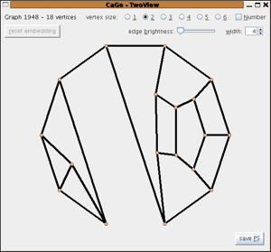
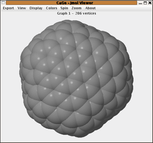
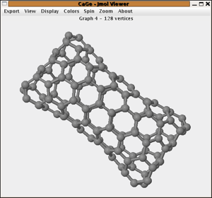
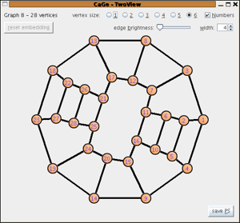

The 3-regular plane graphs windows
3-regular plane graphs are plane graphs where every vertex has exactly 3 neighbours. Especially in the mathematical literature 3-regular graphs are also called "cubic" graphs. There are 4 different interfaces that allow to further specify the class of graphs that shall be generated.
General cubic plane graphs
In this window there are relatively few possible
restrictions to the class of cubic plane graphs that can be
chosen. One must choose the number of vertices and can choose
lower bounds for the face size and the "cyclic
connectivity" of the graphs.
The cyclic connectivity of a connected graph is the smallest
number of vertices that can be removed so that the graph becomes
disconnected and every part contains at least one cycle. Due to
the Euler formula, a cubic plane graph can be at most cyclically
5-connected, so the values 1 to 5 that can be chosen span the whole range.
The default is
"cyclically 3-connected". Choosing "cyclically 1-connected"
would not restrict the class at
all.
Due to the Euler formula the minimum face
size in a cubic plane graph is 3,4, or 5. So all possibilities are covered.
The default is "minimum face size 3" which is in fact not restricting the class at all.

Fullerenes
A more detailed description than this short one - and also with additional links about e.g. the discovery of fullerenes - can be found here.
Fullerenes are molecules consisting of carbon atoms lying on the surface of a
(topological) sphere. The mathematical models for fullerenes are cubic plane graphs where
all the faces are pentagons or hexagons. The Euler formula immediately implies that there
are exactly 12 pentagons and it is easy to show that fullerenes are 3-connected and
cyclically 5-connected.
One must give the number of vertices of the fullerenes one wants to generate. It is also possible
to give a range of vertex numbers. Furthermore one can choose to output the
dual graphs or graphs that obey the
"IPR-rule" -
that is graphs where no two pentagons share an edge.
It is also possible to make CaGe compute the symmetry groups of the structures and filter
the output for graphs with a given symmetry group. But this should be used with care:
because this option is implemented as a filter,
the number of structures generated per second can be very low in cases where only a small ratio of
the graphs have the given group. For large vertex numbers this
is the case for practically all groups except C1.

Cubic plane graphs with given face sizes
This window offers a generalization of the fullerenes window. So in principle fullerenes
can also be generated in this window - only that the options that are special for fullerenes
(like e.g. IPR) are not available.
One must specify the number
of vertices and can choose the face sizes that are allowed. In addition one can choose
limits for the numbers of faces for a given size (e.g. "between 2 and 5 4-gons") and
allow only graphs with a certain connectivity number. Allowing only pentagons and hexagons would
lead to the generation of fullerenes.

Bipartite cubic plane graphs
Bipartite graphs are graphs where the set of vertices can be split
into two parts so that no two vertices in the same part are adjacent. For plane graphs this
is equivalent to the requirement that all faces have even length and in the case of regular
graphs it also implies that both parts have the same size.
One has to give the number of vertices
and can choose lower
bounds or exact values for the cyclic connectivity. Because every bipartite cubic plane graph
contains quadrangles, there are no such graphs with a larger cyclic connectivity number than 4.
While for cyclic connectivity 3 or 4 a specialized generator is used, for 1 and 2 the generator
CGF designed for cubic plane graphs with given face sizes)
is used. This generator is designed for relatively few allowed face sizes and not for this case,
so its performance in this case is not very good and it should be replaced by a specialized
generator in the future.

| choosing
a generator window |
||